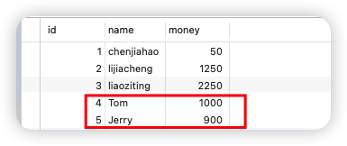
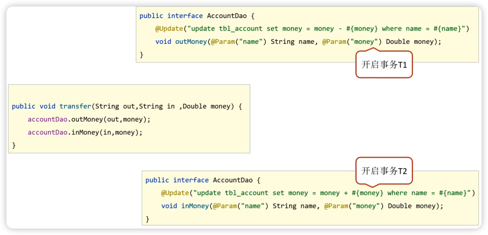
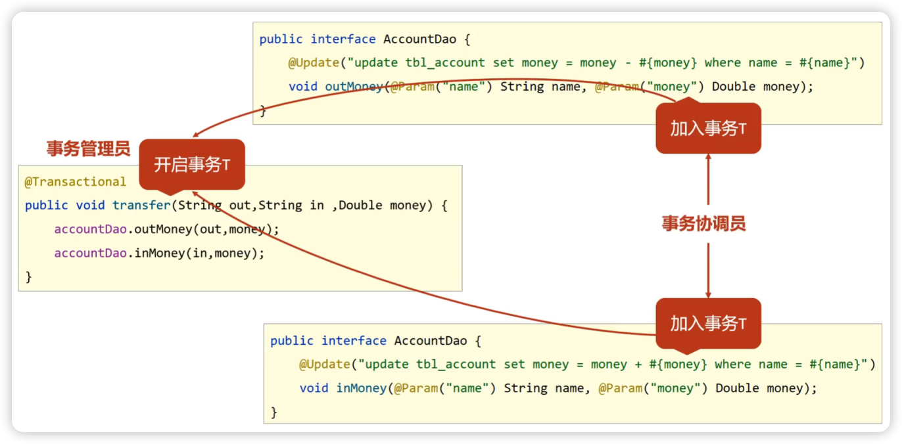
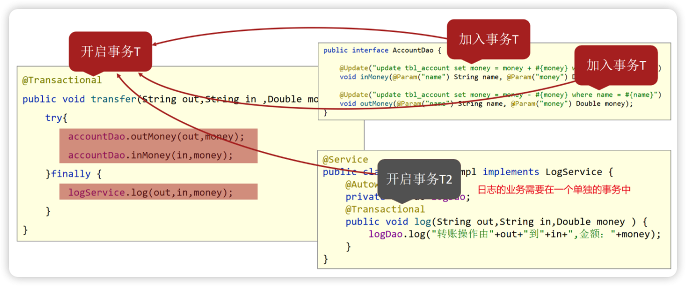
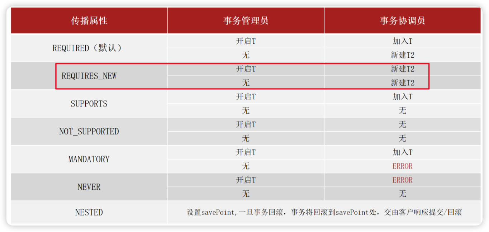

05-Spring事务管理
数据库的事务在数据库还有JavaWeb中也多次提到了，事务管理保障了一系列的数据库操作同成功同失败，事务管理非常重要。下面就来讲一下Spring是如何进行事务管理的。
Spring事务简介
相关概念
- 事务作用：在数据层保障一系列的数据库操作同成功同失败；
- Spring事务作用：在数据层或业务层保障一系列的数据库操作同成功同失败；
为什么业务层需要进行事务管理？举个例子来说，转账业务会有两次数据层的调用，一次是加钱一次是减钱；把事务放在数据层，加钱和减钱就有两个事务；没办法保证加钱和减钱同时成功或者同时失败；这个时候就需要将事务放在业务层进行处理。
Spring为了管理事务，提供了一个平台事务管理器（接口）PlatformTransactionManager：
除此之外，Spring还为其提供了一个具体的实现（类）：DataSourceTransactionManager.
我们只需要给它一个DataSource对象，它就可以帮你去在业务层管理事务。其内部采用的是JDBC的事务。所以说如果你持久层采用的是JDBC相关的技术，就可以采用这个事务管理器来管理你的事务。而Mybatis内部采用的就是JDBC的事务，所以后期我们Spring整合Mybatis就采用的这个DataSourceTransactionManager事务管理器。
Spring事务转账案例
需求：实现任意两个账户间转账操作（账户A加钱，账户B减钱）
实现：基于Spring整合MyBatis环境，实现转账操作。忘记如何整合Mybatis环境的去看03-Spring整合三方框架。
环境搭建

事务管理
如果在转账过程中出现了异常，如：
1 | public void transfer(String in, String out, double money) { |
程序出现异常后，转账失败，但是异常之前操作成功，异常之后操作失败，整体业务失败：

正常来说，Tom账户应该收到来自Jerry账户转账的100元，但是由于在转出之后程序出现异常，后面的转入操作根本没有进行，这在现实中是肯定不允许出现的。这就体现出事务管理的重要性，程序出现异常时要进行事务回滚，这个事务应该是在业务层（Service），Spring事务管理就是做这个的：
步骤1：在需要被事务管理的方法上添加注解
1 |
|
@Transactional可以写在接口类上、接口方法上、实现类上和实现类方法上，建议（标准）写在接口或接口的方法上。
步骤2：在JdbcConfig类中配置事务管理器（mybatis使用的是jdbc事务）
1 |
|
事务管理器要根据使用技术进行选择，Mybatis框架使用的是JDBC事务，可以直接使用DataSourceTransactionManager。
步骤3：SpringConfig开启事务注解
1 |
发现在转换的业务出现错误后，事务就可以控制回滚，保证数据的正确性：

Spring事务管理总结
注意两个注释：
- 配置类注释：
@EnableTransactionManagement设置当前Spring环境中开启注解式事务支持； - 业务层接口注释：
@Transactional为当前业务层方法添加事务（如果设置在类或接口上方则类或接口中所有方法均添加事务）。
Spring事务角色
重点要理解两个概念，分别是事务管理员和事务协调员。
1、未开启Spring事务之前：
AccountDao的outMoney因为是修改操作，会开启一个事务T1；AccountDao的inMoney因为是修改操作，会开启一个事务T2；
AccountService的transfer没有事务。
如果运行过程中如果没有抛出异常，则T1和T2都正常提交，数据正确；如果在两个方法中间抛出异常，T1因为执行成功提交事务，T2因为抛异常不会被执行，就会出现数据错误。
2、开启Spring事务后
transfer上添加了@Transactional注解，在该方法上就会有一个事务T，AccountDao的outMoney方法的事务T1加入到transfer的事务T中，AccountDao的inMoney方法的事务T2加入到transfer的事务T中。这样就保证他们在同一个事务中，当业务层中出现异常，整个事务就会回滚，保证数据的准确性。
- 事务管理员：发起事务方，在Spring中通常指业务层开启事务的方法；
- 事务协调员：加入事务方，在Spring中通常指数据层方法，也可以是业务层方法；
注意：目前的事务管理是基于
DataSourceTransactionManager和SqlSessionFactoryBean使用的是同一个DataSource数据源。
Spring事务属性
事务配置
这些属性都可以在@Transactional注解的参数上进行设置。
readOnly：true只读事务，false读写事务，增删改要设为false（默认），查询设为true。
timeout：设置超时时间（单位秒），在多长时间之内事务没有提交成功就自动回滚，-1表示不设置超时时间。
rollbackFor：当出现指定异常进行事务回滚
noRollbackFor：当出现指定异常不进行事务回滚
关于Spring事务异常回滚的问题，Spring的事务只会对Error异常和RuntimeException异常及其子类（运行时异常）进行事务回滚，其他的异常类型是不会回滚的，比如IOException不符合上述条件所以不回滚。
此时就可以使用rollbackFor属性来设置IOException异常回滚。
事务传播行为
为了讲解事务传播行为属性propagation的设置，我们需要完成下面的案例。
转账业务追加日志案例
需求：实现任意两个账户间转账操作，并对每次转账操作在数据库进行留痕（数据库记录日志），无论转账操作是否成功，均进行转账操作的日志留痕。
环境准备
步骤1：数据库创建日志表
步骤2：添加LogDao接口
1 | public interface LogDao { |
步骤3：添加LogService接口与实现类
1 | public interface LogService { |
步骤4：在转账的业务中添加记录日志
1 |
|
当程序正常运行，tbl_account表中转账成功，tbl_log表中日志记录成功；当转账业务之间出现异常（int i =1/0），转账失败，tbl_account成功回滚，但是tbl_log表未添加数据。而我们希望无论转账操作是否成功，日志都必须保留。
失败原因：日志的记录与转账操作隶属同一个事务，同成功同失败。
事务传播行为
log方法、inMoney方法和outMoney方法都属于增删改，分别有事务T1、T2、T3，@Transactional注释开启事务T，把T1、T2、T3都加入到事务T中来，当转账失败后，所有事务都回滚，所以日志没有记录下来。如果要想让log方法单独开启一个事务，就用到了事务传播行为。
事务传播行为是指事务协调员对事务管理员所携带事务的处理态度，用到了@propagation属性。
修改logSevice的@Transactional属性值，改变事务传播行为（当前操作需要新事务）
1 |
事务传播行为的可选值
